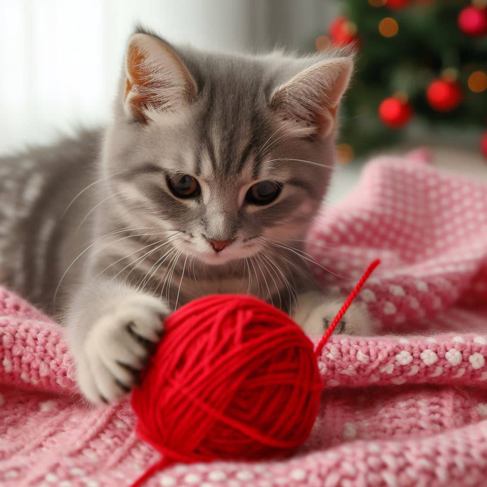

Gatos
Los gatos son felinos cuadrúpedos los cuales nos han acompañado
por un largo periodo de tiempo, y son conocidos por su naturaleza
aseada e independiente, siendo animales los cuales a diferencia
de los perros llevan menos tiempo con nosotros habiéndose
acercado al ser humano hace 9500 años.
Estos tienen su historia
bastante arraigada en la cultura humana, ya que fueron
venerados por la civilización egipcia en su momento viéndolos
como seres sagrados o dioses. A su vez son seres solitarios,
que pueden llegar a vivir en colonias o comunidades y se
adaptan a rutinas específicas, por lo que cualquier cambio
en estas se debe realizar tras un periodo de adaptación.
En la misma medida son natos cazadores los cuales se alimentan
principalmente de carne ya que su sistema digestivo no procesa
los vegetales correctamente. Poseen un fuerte instinto territorial
que los hace ser más independientes que la mayoría de mascotas
por lo que suelen ser una muy buena opción para apartamentos
y personas con un horario ocupado.
Junto a esto encontramos que son seres nocturnos y buscan explorar
y curiosear a sus alrededores desgastando así sus golpes de energía.
Se a hecho estudios con respecto al comportamiento de los gatos y se
a descubierto una serie de acciones que estos cometen para llamar
la atención de sus propietarios, entre ellos encontrándose el
maullido ya que estos no suelen hacerlo con los de su misma especie
de forma seguida. También expresan sus emociones según el movimiento
de su espalda, orejas y cola con las cuales se expresa si esta feliz,
triste o enojado.
Cuidados para un gato

Los gatos son animales que requieren de ciertos cuidados para
mantenerse saludables y felices. A continuación, se presentan
algunos consejos para cuidar a un gato:
- Aseo: Los gatos son animales muy limpios que se acicalan
continuamente a lo largo del día, por lo que no necesitan bañarse
con frecuencia. Sin embargo, es importante cepillar su pelaje
regularmente para evitar la formación de bolas de pelo y mantener
su piel y pelo saludables. También es necesario revisar sus
orejas y uñas para asegurarse de que estén limpias y en buen estado.
- Alimentación: Los gatos son animales carnívoros estrictos,
por lo que necesitan una dieta rica en proteínas animales. Es
importante proporcionarles alimentos de alta calidad y asegurarse
de que tengan acceso a agua fresca y limpia en todo momento.
- Arenero: Los gatos son animales muy limpios y necesitan
un lugar adecuado para hacer sus necesidades. Es importante
proporcionarles un arenero limpio y cómodo, y enseñarles a usarlo
desde una edad temprana.
- Juegos y actividad física: Los gatos son animales activos
y necesitan jugar y hacer ejercicio para mantenerse saludables.
Es importante proporcionarles juguetes y estimular su instinto
cazador con juegos que les permitan perseguir y capturar objetos.
- Socialización: Los gatos son animales territoriales y necesitan
tiempo para adaptarse a nuevos entornos y personas. Es importante
socializarlos desde una edad temprana y enseñarles a convivir con
otros animales y personas.
- Visitas al veterinario: Es importante llevar a los gatos al
veterinario regularmente para asegurarse de que estén en buen
estado de salud y prevenir enfermedades. También es importante
mantenerlos al día con sus vacunas y tratamientos antiparasitarios.
Consejos a seguir para mantener a tu gato feliz

Aquí hay algunos consejos adicionales para hacer feliz a un gato:
- Proporcionar un rascador: Los gatos necesitan afilar sus
uñas y marcar su territorio. Proporcionar un rascador les
permitirá hacer ambas cosas y evitará que dañen los muebles
o la alfombra.
- Proporcionar lugares elevados: A los gatos les gusta estar
en lugares elevados, como estantes o torres para gatos.
Proporcionarles estos lugares les permitirá sentirse seguros y
observar su entorno desde una posición elevada.
- Jugar con ellos: Los gatos necesitan jugar y hacer ejercicio
para mantenerse saludables y felices. Jugar con ellos con juguetes
interactivos, como varitas con plumas o pelotas, les permitirá
perseguir y capturar objetos y estimular su instinto cazador.
- Darles espacio: Los gatos son animales independientes y
necesitan su espacio. Es importante respetar su espacio y no
forzar la interacción si no están interesados.
- Proporcionar una caja de cartón: A los gatos les encanta
esconderse y explorar. Proporcionar una caja de cartón les
permitirá hacer ambas cosas y les proporcionará un lugar seguro
y cómodo para descansar.